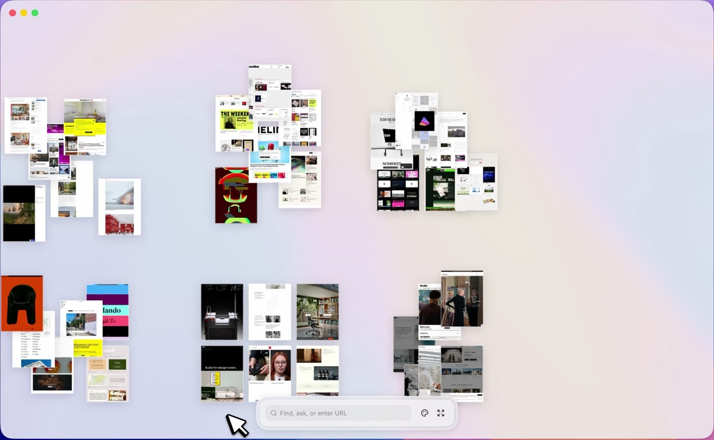
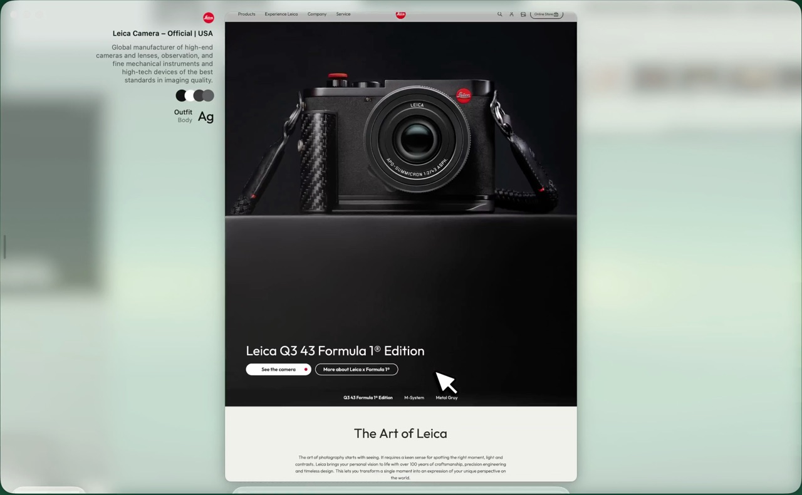
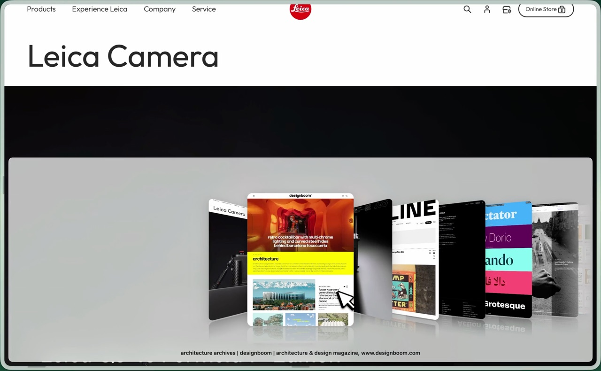
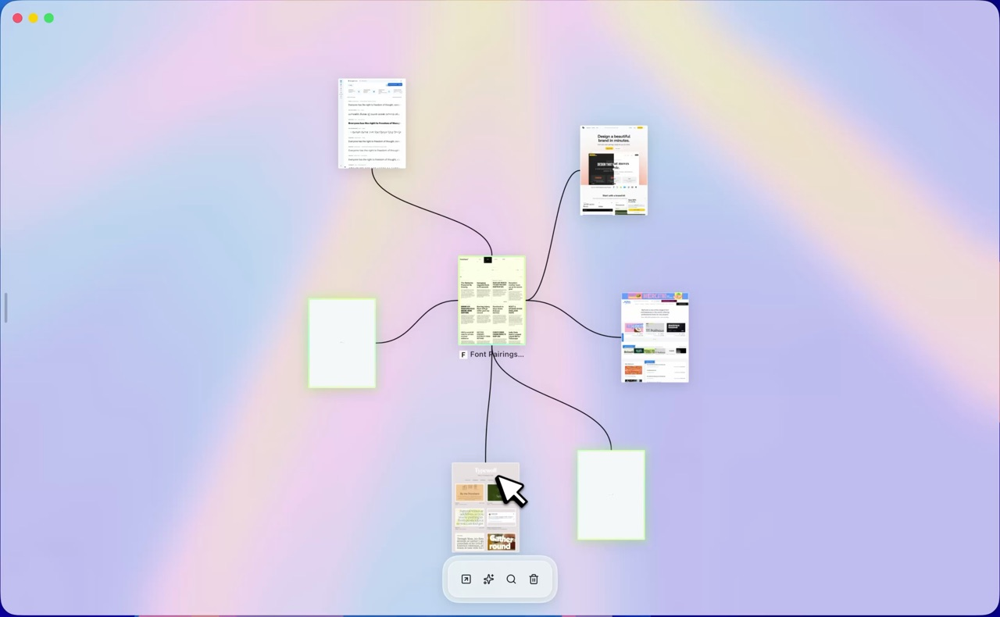
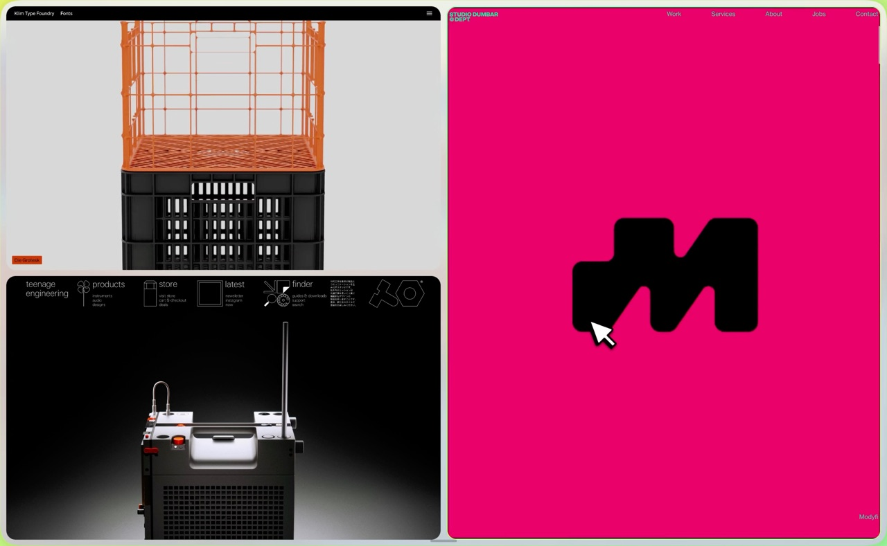
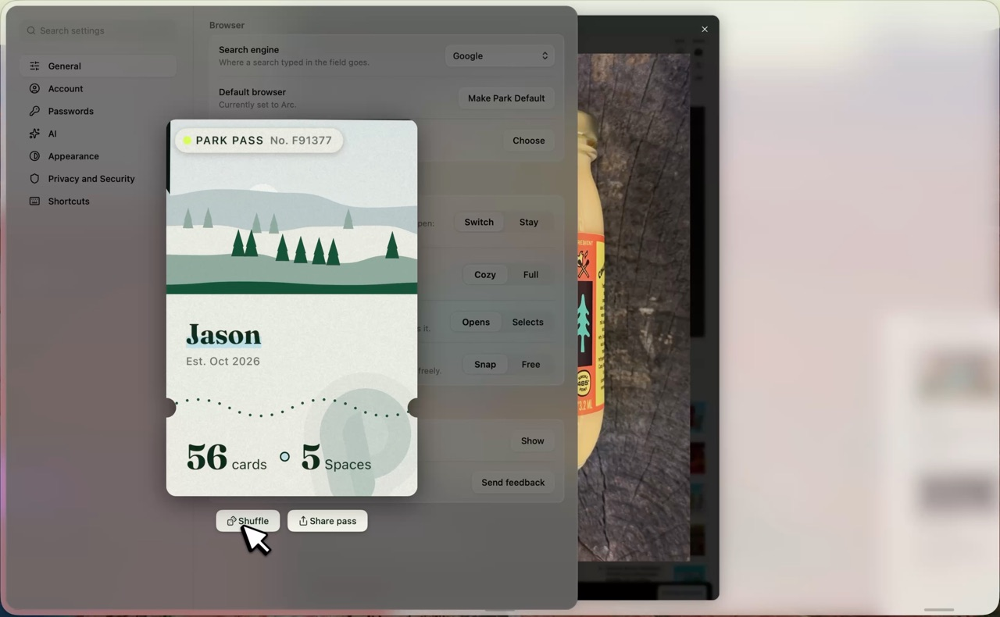
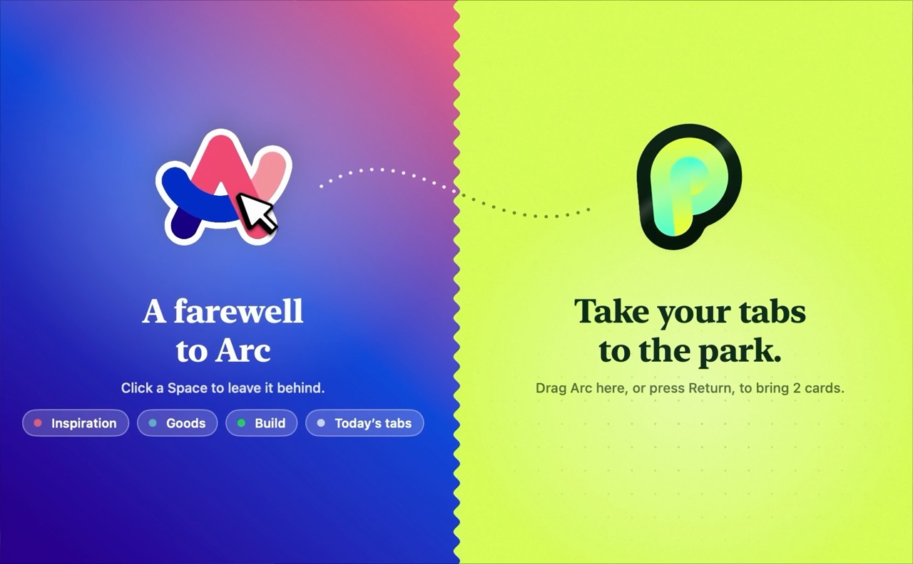

A new browser for Mac
Take your tabs to the park.
Forty tabs, ten frozen, one of them playing music you can't find. Instead of a row, Park gives you a canvas, and every page gets a card, so you see more than half a favicon.
See you in the park.
Coming from Arc? Bring your Spaces over in one drag.
Have a look
Take a stroll.
That's really Park in there. Sit back and it'll walk you around, or grab the canvas and wander off.







Pinch or ⌘-scroll to zoom, then drag to wander.
Coming from Arc?
The good parts come with you.
Arc raised the bar for what a browser could be. Park keeps what worked, then gives every page room to spread out.
- In Arc: Your whole sidebarIn Park: Import from Arc
Drag Arc in and your Spaces, pinned tabs, folders and favourites come with it. Folders become clusters of cards.
- In Arc: Spaces and ProfilesIn Park: Spaces
Each with its own logins, colours and icon. ⌘1 to ⌘9 to switch.
- In Arc: Command BarIn Park: ⌘K for everything
Jump to any page in any Space, or run a command.
- In Arc: Little ArcIn Park: Peek
Links from Mail or Slack open small, then become a card in the Space you pick.
- In Arc: Archived tabsIn Park: Stacks
Pages you haven't touched in a while fold into stacks you can flip through, and nothing gets thrown away.
- In Arc: Split ViewIn Park: Side by side
Select a few cards and press Return. Two split, four make a quad.
- In Arc: Tidy TabsIn Park: Tidy
Select some cards and they sort into named groups by topic, with or without AI.
- In Arc: Picture in PictureIn Park: The mini player
Long videos keep playing in a corner.
- In Arc: Arc MaxIn Park: AI on your terms
Bring your own model, and it asks before anything leaves.
- In Arc: The sidebarIn Park: The canvas
Every page is a card you can see. ⌘-click a link and it opens as a new card beside its page, joined by a trail.
Progress
You are here.
Real progress, updated as things grow.
The grounds
What's in the park.
Everything built so far, from the basics you'd expect to the things only Park does. Pick a trail.
Est. 2026
Pages you can see all at once, arrange, and come back to.
Every page is a card
Pan and pinch across everything you have open. Each card is the page as you left it, sharp at any zoom.
Branch off with ⌘-click
Browse inside a card like you would in a tab. ⌘-click a link instead, and it opens as a new card beside its page, joined by a trail.
Threads you can walk
Click a trail to cross it, or step down a thread with ⌘↓ and back up with ⌘↑. A dashed trail leads to another site, and Tidy Thread lines a page's children up beside it.
Tidy
Select some cards and they sort into named groups by topic, with AI if you've set it up and on your Mac if you haven't. One ⌘Z puts them all back.
Hands like a design tool
⌘ and a scroll zooms. Hold ⇧ as you drag and a card keeps to one axis and lines up with its neighbours, with guides to show it.
Find by what a page says
Search titles, addresses and the words on the page itself, indexed as you browse. Return flies you straight there.
Old pages fold into stacks
Cards you haven't touched in a while fold into stacks you can flip through. Nothing gets thrown away.
Room for a crowd
In our tests, a single Mac kept 50,000 cards fluid. Pages only go live when you open them, never just because you zoomed in.
Right where you left it
Relaunch and you're back where you were, with the same page open. ⌘⇧T brings closed cards back, even after a relaunch.
Separate canvases for separate parts of life, and links from other apps that wait their turn.
Separate canvases, separate logins
Each new Space gets its own website data, so you can be signed in to the same site as different people in Work and Personal.
Make each Space yours
Give it a name, an icon or emoji, and its own colours. Switch with ⌘1 to ⌘9, and move cards between Spaces.
Signs at the edge
Your Spaces stand along the window's edge like trail signs: a board for the one you're in, and arrows pointing to the rest.
A Private Space that forgets
⌘0 opens a Space that's never saved or synced, with no AI. Clear it and it's gone.
One canvas, many windows
Every window shows the same canvas, with one Space up in each. Pick a Space that's up in another window and the two swap.
Peek before it's a card
A link from Mail, Slack or anywhere else opens in a small window over what you're doing. Esc closes it and keeps nothing.
Send it to the right Space
One button turns a peek into a card, in whichever Space you pick. Sign in while peeking and you stay signed in.
Three places to be: the canvas, a page on it, or a page filling the window. One pinch moves between them.
Pinch to get closer
Pinch toward a card and it snaps into its cozy frame with a haptic tick. Keep pinching and the page goes full.
Pan into a page
Bring a card to the middle at reading size and it shows its frame, then opens when you let go.
Click like the Finder
A click selects a card. Space opens it at cozy, a double-click goes full, and Esc steps back out.
Cozy keeps the context
The canvas blurs around the page, and the site's icon, title and description sit beside it. Set your persona to Designer or Developer and its colours and fonts join them. Click a colour to copy its hex.
Full, framed by the canvas
The page fills the window with a sliver of canvas around it, lifted off with a soft shadow.
Side by side
Select a few cards and press Return. Two split, four make a quad, and every page stays live. Close them one at a time and the rest make room.
Flip through with ⌃⇥
Every card in the Space comes up in a row over the page you're on, without leaving it.
Snapping is optional
Prefer free zoom? Switch snapping off, and pages settle to the nearest level when your fingers stop.
One floating bar in place of the toolbar, the address bar and the menus. It changes with what you're doing.
One field to find, ask or go
Find cards, search your history, type an address or ask AI. Its buttons change with the moment, down to a key on sign-in forms.
Put it anywhere
Drag it to the top or bottom, left, centre or right, and it snaps into place. With springy motion on, it bends like jelly as you drag.
Steps aside
At rest it's just its bar. With a page at full it shrinks to a line at the edge, and comes back as your pointer nears.
No more pop-ups
Dialogs, downloads, camera and microphone requests and confirmations open in the island's glass, not system windows. Esc closes them.
⌘K for everything
Jump to any card in any Space, or run a command.
The small things browsers usually get wrong on a canvas, or don't do at all.
Video in a mini player
Leave a card while a long video plays and it carries on in a corner player. It's the same page, so nothing reloads.
See what's making sound
A card playing audio shows a little music bar with notes rising off it. Click to pause.
Music with its own bar
Pin a card's music and it gets a bar of its own, with the track, a seek line and controls. It plays on as you change Spaces.
Maps keep the trackpad
Pages that pan and zoom themselves get your pinch and scroll, and Park remembers the site. ⌘ with a pinch always moves the canvas.
Sign-in pop-ups behave
“Sign in with…” windows float over their own page instead of opening a stray card.
Camera and mic, per site
Sites ask in the island, and Park remembers your answer for that site.
Failures keep your place
A page that won't load says why and offers Retry, and its card keeps the last good picture.
Share and export
Share any card or page, or export a whole Space as an image or a list of links.
Built in, and private by default.
A password manager in the island
Fill and save logins, even inside frames, and generate strong passwords. Import from Chrome, Safari, Firefox, 1Password, Bitwarden or LastPass.
Passwords never touch the server
They live in your Keychain and travel between your Macs by iCloud Keychain. Touch ID guards every reveal, copy and export.
Sealed sync
Sign in with Apple, or an emailed link or code, and your canvas follows you to every Mac, sealed on the device with a key the server never holds.
Trackers blocked
Built-in blocking with EasyList and EasyPrivacy, and a per-site switch when you need it.
Your call, in one place
Privacy and Security clears your browsing data, sets how long history stays, upgrades sites to HTTPS and warns about fraud. Usage stats are off unless you turn them on, and never include addresses or titles.
Careful by default
Passwords are never filled on unencrypted pages, private pages are never indexed, and web content is kept away from your files.
AI that builds on the canvas, opt-in and on your terms, and tools for people who build sites.
Find more like this
AI names related pages and searches, and they fan out beside the page as a new thread, each with a note on why.
Your model, even a local one
Use Claude, OpenAI, or a model on your own Mac through Ollama or LM Studio. Keys stay in your Keychain.
Asks before anything leaves
Park shows exactly what would be sent and asks first. AI never runs in the Private Space.
The Workshop: Design
⌥⌘E opens a panel beside the page, with its colours, fonts and spacing as editable rows at desktop, tablet and phone widths. Copy your changes out when you're done.
The Workshop: Developer
The panel's other side shows the page's DOM, console and network requests. ⌥⌘I goes straight there.
Keep it as a Take
Your edits stay with the page as its Take, even after a reload. Keep one as a card beside the page, on a trail, and try another.
Ask at the bench
Ask your model to change the page. Each change lands on the undo like your own, and variations fan out as cards.
Capture a page
Grab the whole page, or drag a frame over just the part you want.
Native, not a web app in a wrapper.
Native through and through
Swift, AppKit and Apple's own WebKit. It feels like a Mac app because it is one.
A canvas of glass
Frosted or sheer glass over your desktop, or solid. Light, dark or system, in a warm, neutral or cool tone.
Motion you choose
Springy, precise or reduced. Springy keeps its momentum when you change your mind mid-flight.
Yours to tune
Rebind any keyboard shortcut and pick from 28 app icons.
Park Pass
A membership card in Settings with your name, your cards and your Spaces. It tilts, it shuffles, and it shares.
Updates itself
New builds download in the background and install the next time you quit.
Accessible
The canvas is reachable with VoiceOver and the keyboard, and reduced motion is honoured throughout.
In ten languages
English, French, Spanish, German, Brazilian Portuguese, Italian, Japanese, Simplified Chinese, Korean and Icelandic, with every word in the app localised.
browse /brouz/ · verb
Long before it meant clicking around, it meant to wander and nibble on leaves, the way deer do in a park. Park just gives it the room again.
The waitlist
Save your spot.
Park opens to a small group first. Leave your email and you'll hear the moment the gates open.
See you in the park.